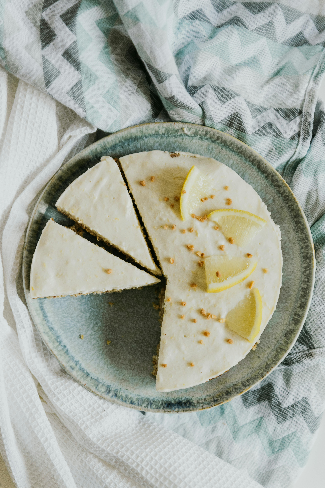
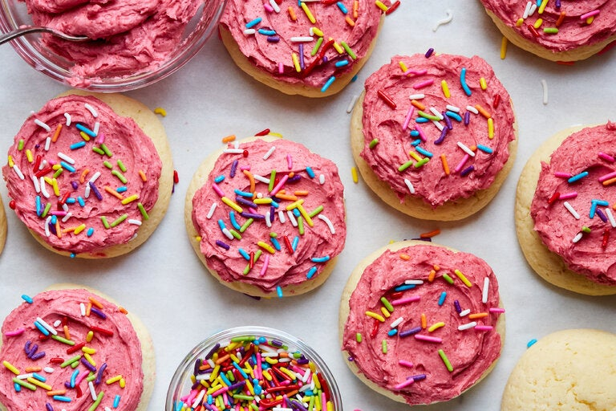

Desert Recipies
Lemon Crumb Cake

INGREDIENTS
Crumb Topping
- 1 1/2 cups all-purpose flour
- 1/2 cup white sugar
- 2 tablespoons lemon zest
- 1 teaspoon freshly squeezed lemon juice
- 1 teaspoon freshly squeezed lemon juice
- 1/2 cup cold butter, diced
Cake
- 1 1/2 cups all-purpose flour
- 1/2 teaspoon baking soda
- 1/4 teaspoon salt
- 1 cup white sugar
- 1/2 cup butter, softened
- 3 large eggs, at room temperature
- 1 teaspoon lemon extract
- 1/2 teaspoon vanilla extract
- 2 tablespoons lemon zest
- 1/4 cup freshly squeezed lemon juice
- 1 cup lemon curd
-
1 tablespoon confectioners sugar, or as needed, for dusting
(optional)
DIRECTIONS
-
Preheat the oven to 350 degrees F (175 degrees C). Grease a
9-inch springform pan. Set aside.
-
Make crumb topping by combining 1 1/2 cups flour, 1 cup sugar,
2 tablespoons lemon zest, 1 teaspoon lemon juice, and 1/4
teaspoon salt. Cut in cold butter until mixture resembles coarse
sand. Set aside.
-
In another bowl combine 1 1/2 cups flour, baking soda, and
1/4 teaspoon salt.
-
In a large bowl, beat 1/2 cup butter and 1 cup sugar until
creamy. Add eggs, one at a time, beating after each addition.
Add lemon extract, vanilla, 2 tablespoons lemon zest and 1/4 cup
lemon juice. Add dry ingredients and mix just until all
ingredients are moistened.
-
Spread batter into pan, top with lemon curd and add crumble \
evenly over top. Bake until a toothpick inserted near the center
comes out clean, 35 to 40 minutes. Let cool on a wire rack.
Remove springform pan; sprinkle confectioner’s sugar over top of
cake.
Frosted Sugar Cookies

INGREDIENTS
Frosting
-
1 cup / 30 grams freeze-dried raspberries, finely ground in a
food processor or spice grinder
-
1 cup / 225 grams unsalted butter (2 sticks), at room
temperature
- 2cups/245 grams confectioners' sugar
- 1 teaspoon vanilla extract
- Pinch of kosher salt
Cookies
-
½ cup / 115 grams unsalted butter (1 stick), at room temperature
-
3 ounces / 85 grams cream cheese, at room temperature
- 1 cup / 200 grams granulated sugar
- ½ teaspoon kosher salt
- 2 large eggs, at room temperature
- 1 tablespoon vanilla extract
- 2¼ cups / 285 grams cake flour
- 2 teaspoons baking powder
- Sprinkles, for garnish
DIRECTIONS
-
Make the cookies: In a large bowl, using a spoon, cream the
butter, cream cheese, sugar and salt until smooth and fluffy.
Add the eggs and vanilla extract, and whisk to incorporate some
air and to dissolve the sugar crystals, about 1 minute. Stir in
the flour and baking powder until just incorporated.
-
Heat oven to 350 degrees and line two rimmed sheet pans with
parchment paper. Using two spoons or a cookie scooper, plop out
2-tablespoon/50-gram rounds spaced a couple of inches apart.
(You should get about 7 to 8 cookies per sheet pan.) Place the
sheet pans in the freezer for 15 to 20 minutes until the dough
is no longer sticky and easier to handle.
-
While the dough chills, make the frosting: In a fine-mesh sieve
set over a medium bowl, sift the ground raspberries, using a
spoon to help pass them through, until most of the ruby-red
powder is in the bowl and most of the seeds are left behind in
the sieve. (Discard the seeds.)
-
To the bowl, add the 1 cup butter, confectioners’ sugar, vanilla
extract and salt and, with an electric hand mixer, mix on low
speed until the butter absorbs the sugar. Then, turn the speed
up to high and beat until the frosting doubles in size, about 2
minutes, scraping down the sides of the bowl with a rubber
spatula to ensure all the ingredients are incorporated. Transfer
the frosting to a small container, cover tightly, and set aside.
(You should have about 2 cups of frosting.)
-
Remove the sheet pans from the freezer. Roll the chilled dough
into even balls and flatten them slightly with your fingers so
they’re about 2 inches wide and 1 inch high. Bake the cookies
for 13 to 15 minutes, rotating the pans and switching racks
halfway through, or until they no longer look wet on top, are
still light in color and spring back to the touch. They will
puff up and crack slightly. Let cool completely on the sheet
pan. (They will continue to cook as they sit.)
-
Using a butter knife or offset spatula, frost each cooled cookie
with the raspberry frosting and adorn with the sprinkles.
Chocolate Mousse

INGREDIENTS
- 1 3/4 cups cold heavy cream
- 1 large egg
- 2 large egg yolks
- 1/4 cup granulated sugar
- 1 teaspoon instant espresso powder
- 1 teaspoon vanilla extract
- 1/2 teaspoon kosher salt
- 4 ounces good-quality bittersweet chocolate, chopped
- 4 ounces good-quality semisweet chocolate, chopped
DIRECTIONS
-
Whip 1 cup of the heavy cream to soft peaks in a medium bowl.
Set aside.
-
Add the egg, egg yolks, sugar, espresso powder, vanilla extract,
salt and 1 tablespoon water to a medium heatproof bowl and whisk
to combine. Set the bowl over a medium saucepan of gently
simmering water (do not allow the bowl to touch the water).
Whisk constantly until the mixture is pale, hot to the touch and
has almost doubled in volume, about 4 to 6 minutes, scraping
down the sides of the bowl occasionally with a rubber spatula,
if necessary. Remove from the heat and continue whisking until
cooled, about 2 minutes.
-
Put the chopped chocolate in a medium heatproof bowl and set
over the saucepan of gently simmering water (do not allow the
bowl to touch the water). Stir occasionally with a rubber
spatula until the chocolate is melted and smooth. Remove from
the heat and gently stir for about 3 minutes to cool slightly.
-
Whisk the egg mixture into the melted chocolate in 3 additions
until combined. (The mixture may get very thick.) Using a rubber
spatula, gently fold the whipped cream into the chocolate
mixture in 3 additions until it is fully incorporated. It is
important that the chocolate mixture is not warm to ensure that
it combines smoothly with the whipped cream without seizing up.
-
Divide the chocolate mousse among four 4-ounce ramekins and
chill until firm, about 1 hour.
-
Whip the remaining 3/4 cup cold heavy cream to stiff peaks. Top
each chocolate mousse with whipped cream and serve. (For a
softer texture, allow the ramekins to sit at room temperature
while you whip the cream.)